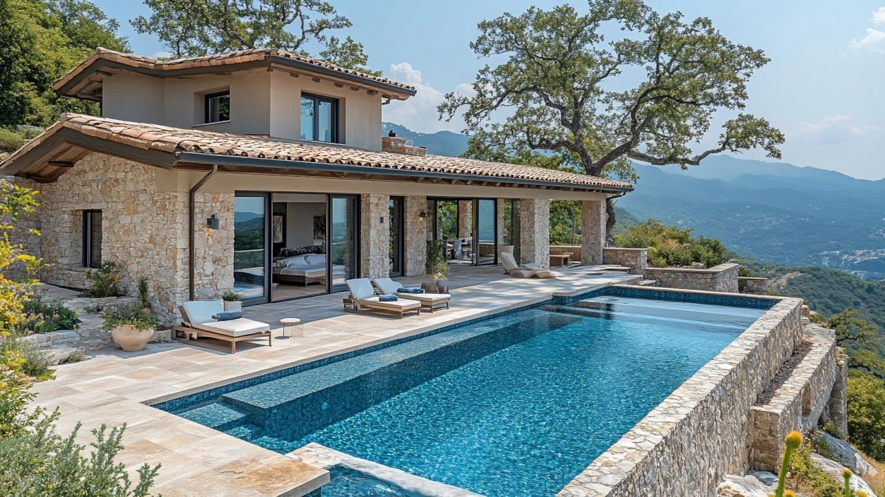

Miejsca i inwestycje
La Zagaleta – najbardziej ekskluzywne miejsce w Europie
 Autor: Lucyna Gacek · · aktualizacja · 3 min czytania
Autor: Lucyna Gacek · · aktualizacja · 3 min czytania

W skrócie
La Zagaleta to prywatne, strzeżone osiedle o powierzchni około 900 ha na wzgórzach Benahavís, około 20 minut od Marbelli i Puerto Banús. Są tu tylko wille na dużych działkach, dwa prywatne pola golfowe, stajnie i ochrona przez całą dobę.
Wille kosztują zwykle kilka milionów euro, a największe posiadłości dużo więcej. Koszty utrzymania są wysokie, a kupujących na takie domy niewielu, więc to decyzja na długie lata.
La Zagaleta uchodzi za jedno z najbardziej ekskluzywnych osiedli w Europie. Wyjaśniamy, czym się wyróżnia i co warto wiedzieć przed zakupem.
Czym jest La Zagaleta
To prywatne osiedle w gminie Benahavís, na Costa del Sol. Zajmuje około 900 ha wzgórz, lasów i dolin między wybrzeżem a górami Serranía de Ronda, z widokiem na morze, a przy dobrej pogodzie na Gibraltar i Afrykę. Powstało od lat 90. na terenie dawnego majątku myśliwskiego. Założenie było proste: mało domów, bardzo duże działki i dużo natury.
Wille
Są tu tylko wille wolnostojące, bez apartamentów i szeregowców. Działki mają zwykle od około 3 000 m² do ponad 10 000 m². Każda willa jest projektowana indywidualnie, często przez znanych architektów, od klasycznych andaluzyjskich posiadłości po minimalistyczne szklane domy. Duże wille mają często spa, kino, siłownię, piwnicę na wino i pomieszczenia dla personelu.
Bezpieczeństwo i prywatność
- ogrodzony teren ze strzeżonymi bramami,
- ochrona 24 godziny na dobę, kamery i patrole,
- prywatne drogi zamknięte dla ruchu publicznego.
Goście wchodzą tylko po zgłoszeniu przez mieszkańca.
Życie na osiedlu
- dwa prywatne pola golfowe z 18 dołkami, tylko dla członków,
- klub z restauracją,
- centrum jeździeckie i szlaki konne,
- korty do tenisa i padla, trasy piesze i rowerowe,
- lądowisko dla helikopterów i usługi concierge, także opieka nad domem pod nieobecność właściciela.
Do Puerto Banús i Marbelli jest około 20 minut, do Rondy około 45 minut, do lotniska w Maladze niecała godzina.
Czy to dobra inwestycja?
Liczba działek jest ograniczona i co roku na sprzedaż trafia niewiele willi, a popyt na najdroższe nieruchomości w okolicy Marbelli pozostaje silny. To pomaga utrzymać wartość. Jednocześnie koszty utrzymania są wysokie: opłaty osiedla, personel, ogród i basen, a kupujących na tak drogie domy jest niewielu. Policz wszystkie koszty, zanim się zdecydujesz.
Przykład: willa za 8 mln €
Przy willi z drugiej ręki za 8 000 000 € w Andaluzji płacisz 7% podatku, czyli 560 000 €, plus notariusza, rejestr i prawnika. Do tego dochodzą roczne koszty: IBI, opłaty osiedla, ubezpieczenie, ogrodnik, basen i ochrona. Przy takiej wartości sprawdź też z doradcą podatek majątkowy.
Najczęstsze pytania
Gdzie jest La Zagaleta?
Na wzgórzach Benahavís, w prowincji Málaga, około 20 minut samochodem od Marbelli i Puerto Banús.
Ile kosztuje willa w La Zagaleta?
Zwykle kilka milionów euro. Największe posiadłości z widokiem na morze kosztują znacznie więcej.
Czy można zwiedzić La Zagaletę?
Nie. To prywatne osiedle. Oglądanie willi na sprzedaż umawia agent.
Interesują Cię najbardziej ekskluzywne domy na Costa del Sol? Zobacz luksusowe wille albo napisz do nas.